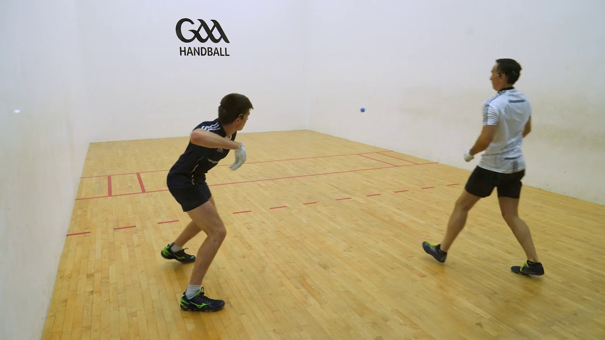
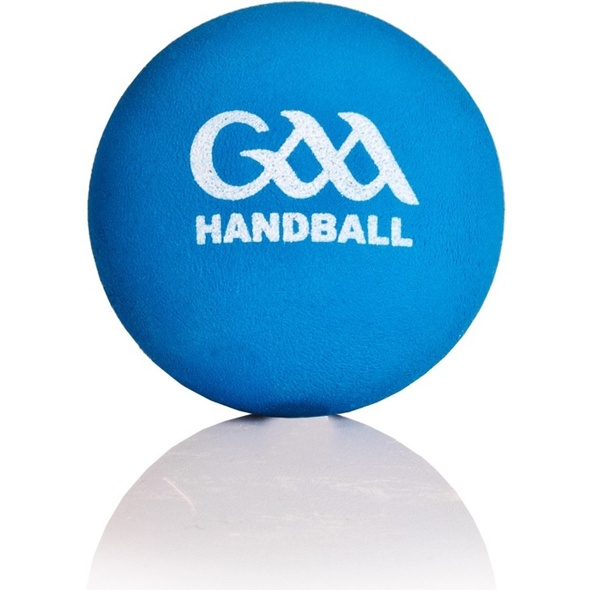

Handball is the lesser known sport in the GAA but it is still a very interesting sport and very simple to play. The sport was founded in 1924 which makes it the most recent added sport into the association. It is not hugely followed by people but many people do play the sport, especially young people. All that is needed to play the sport is a small, blue hardball and a wall.
The game is very simple, all that is needed is the ball, a wall and two players. To play the game you simply hit the ball off the wall using the palm of your hand to which the opponant will respond to by hitting it with the palm of their hand. This continues until someone either misses the ball or hits it out of bounds.
Top 3 male players in the country
Top 3 female players in the country
 